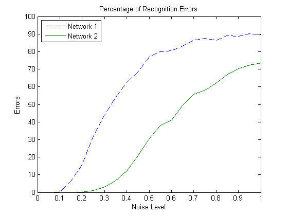

Character Recognition
This example illustrates how to train a neural network to perform simple character recognition.
Contents
Defining the Problem
The script prprob defines a matrix X with 26 columns, one for each letter of the alphabet. Each column has 35 values which can either be 1 or 0. Each column of 35 values defines a 5x7 bitmap of a letter.
The matrix T is a 26x26 identity matrix which maps the 26 input vectors to the 26 classes.
[X,T] = prprob;
Here A, the first letter, is plotted as a bit map.
plotchar(X(:,1))
Creating the First Neural Network
To solve this problem we will use a feedforward neural network set up for pattern recognition with 25 hidden neurons.
Since the neural network is initialized with random initial weights, the results after training vary slightly every time the example is run. To avoid this randomness, the random seed is set to reproduce the same results every time. This is not necessary for your own applications.
setdemorandstream(pi); net1 = feedforwardnet(25); view(net1)
Training the first Neural Network
The function train divides up the data into training, validation and test sets. The training set is used to update the network, the validation set is used to stop the network before it overfits the training data, thus preserving good generalization. The test set acts as a completely independent measure of how well the network can be expected to do on new samples.
Training stops when the network is no longer likely to improve on the training or validation sets.
net1.divideFcn = '';
net1 = train(net1,X,T,nnMATLAB);
Training the Second Neural Network
We would like the network to not only recognize perfectly formed letters, but also noisy versions of the letters. So we will try training a second network on noisy data and compare its ability to genearlize with the first network.
Here 30 noisy copies of each letter Xn are created. Values are limited by min and max to fall between 0 and 1. The corresponding targets Tn are also defined.
numNoise = 30; Xn = min(max(repmat(X,1,numNoise)+randn(35,26*numNoise)*0.2,0),1); Tn = repmat(T,1,numNoise);
Here is a noise version of A.
figure plotchar(Xn(:,1))
Here the second network is created and trained.
net2 = feedforwardnet(25); net2 = train(net2,Xn,Tn,nnMATLAB);
Testing Both Neural Networks
noiseLevels = 0:.05:1; numLevels = length(noiseLevels); percError1 = zeros(1,numLevels); percError2 = zeros(1,numLevels); for i = 1:numLevels Xtest = min(max(repmat(X,1,numNoise)+randn(35,26*numNoise)*noiseLevels(i),0),1); Y1 = net1(Xtest); percError1(i) = sum(sum(abs(Tn-compet(Y1))))/(26*numNoise*2); Y2 = net2(Xtest); percError2(i) = sum(sum(abs(Tn-compet(Y2))))/(26*numNoise*2); end figure plot(noiseLevels,percError1*100,'--',noiseLevels,percError2*100); title('Percentage of Recognition Errors'); xlabel('Noise Level'); ylabel('Errors'); legend('Network 1','Network 2','Location','NorthWest')
Network 1, trained without noise, has more errors due to noise than does Network 2, which was trained with noise.